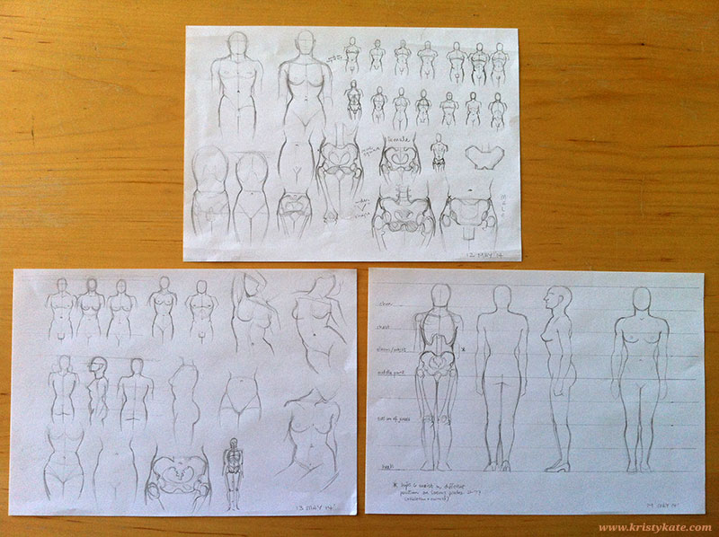
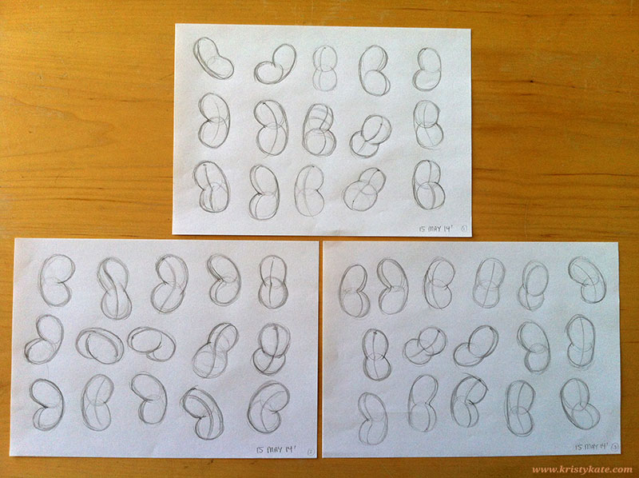

Week 8 Studies
May 12th - 18th
More torso studies this week, continuing with Loomis' Figure Drawing For All It's Worth and adding some Vanderpoel The Human Figure to the mix:

Then I jumped into drawing bean torsos, after watching Stan Prokopenko's video tutorial How to Simplify the Motion of the Torso - The Bean, which can be viewed here: http://www.proko.com/the-bean/

Overall I'm happy with the progress I made this week, particularly in building the habit of studying each night despite full days of client work (until I was struck down with a cold over the weekend, dang!).
Definitely eager to see what improvements have been made when I complete the next anatomy turnaround sheet in Week 9.
Until next time!
x Kristy Kate
+ + +
Have any thoughts on my studies? Join me on my creative journey by leaving a comment (constructive criticism welcome) or connecting via Twitter or Facebook.